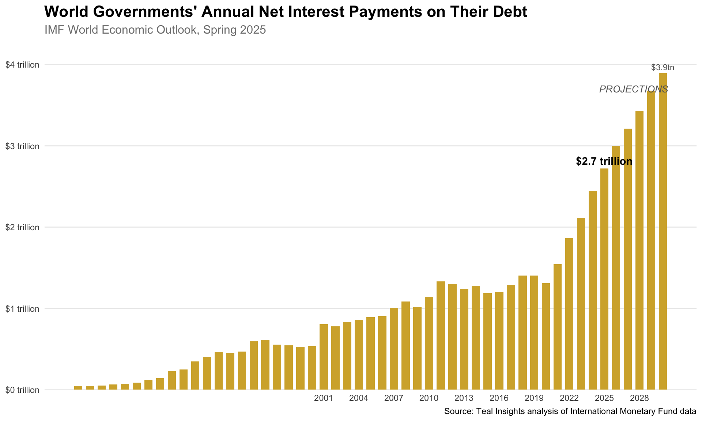

Code
library(tidyverse)
library(imfweo)
library(econid)
library(scales) # For formatting
library(here)This analysis calculates world governments’ annual net interest payments on their debt using the IMF World Economic Outlook (WEO) database. The calculation demonstrates the power of the new imfweo R package for reproducible economic analysis.
Methodology: Net interest payments are calculated as the difference between the overall fiscal balance and the primary fiscal balance (which excludes interest payments). Since the WEO reports these as percentages of GDP, we multiply by GDP values to get dollar amounts.
library(tidyverse)
library(imfweo)
library(econid)
library(scales) # For formatting
library(here)# Get all available WEO series
weo_series <- weo_get_series()
# Define the series we need for the calculation
relevant_series <- c(
"NGDPD", # GDP in billions USD
"GGXCNL_NGDP", # General government net lending/borrowing (% of GDP)
"GGXONLB_NGDP" # General government primary net lending/borrowing (% of GDP)
)
# Verify these series exist
weo_series |>
filter(series_id %in% relevant_series) |>
knitr::kable()| series_id | series_name | units |
|---|---|---|
| GGXCNL_NGDP | General government net lending/borrowing | Percent of GDP |
| GGXONLB_NGDP | General government primary net lending/borrowing | Percent of GDP |
| NGDPD | Gross domestic product, current prices | U.S. dollars |
# Download the latest WEO data (Spring 2025)
weo_2025_spring <- weo_get(
year = 2025,
release = "Spring"
)
# Filter to just the series we need
net_interest_ingredients <- weo_2025_spring |>
filter(series_id %in% relevant_series)
cat("Data retrieved for",
n_distinct(net_interest_ingredients$entity_name),
"entities from 2001 to",
max(net_interest_ingredients$year))Data retrieved for 209 entities from 2001 to 2030We need to distinguish between individual economies (countries/territories) and aggregates (regions/income groups) to avoid double-counting.
# Use econid to classify entities
economy_or_aggregate <- net_interest_ingredients |>
select(weo_name = entity_name) |>
unique() |>
standardize_entity(
weo_name,
output_cols = "entity_type"
) |>
mutate(
# Manual correction for Kosovo (not in econid database)
entity_type = case_when(
weo_name == "Kosovo" ~ "economy",
is.na(entity_type) ~ "aggregate",
.default = entity_type
),
) |>
rename(entity_name = weo_name)
# Display counts
economy_or_aggregate |>
count(entity_type) |>
knitr::kable()| entity_type | n |
|---|---|
| aggregate | 13 |
| economy | 196 |
# Calculate net interest payments for each economy
net_interest_calculations_by_entity <- net_interest_ingredients |>
left_join(
economy_or_aggregate,
by = join_by(entity_name)
) |>
mutate(
series_col_name = case_when(
series_id == "NGDPD" ~ "gdp_usd_bn",
series_id == "GGXCNL_NGDP" ~ "fiscal_balance_pct_gdp",
series_id == "GGXONLB_NGDP" ~ "primary_fiscal_balance_pct_gdp"
)
) |>
select(
entity_name,
entity_type,
series_col_name,
year,
value
) |>
pivot_wider(
names_from = series_col_name,
values_from = value
) |>
mutate(
# Net interest = Primary balance - Overall balance
# (Primary balance excludes interest, so the difference is interest)
interest_pct_gdp = primary_fiscal_balance_pct_gdp - fiscal_balance_pct_gdp,
interest_usd_bn = (interest_pct_gdp/100) * gdp_usd_bn
)
# Save entity-level data
write_csv(
net_interest_calculations_by_entity |>
filter(entity_type == "economy"),
here("data", "entity_level_net_interest_2025_spring.csv")
)# Check for missing data in economies
missing_data_summary <- net_interest_calculations_by_entity |>
filter(entity_type == "economy") |>
group_by(year) |>
summarize(
total_economies = n(),
missing_interest = sum(is.na(interest_usd_bn)),
missing_gdp_share = sum(gdp_usd_bn[is.na(interest_usd_bn)], na.rm = TRUE) /
sum(gdp_usd_bn, na.rm = TRUE),
.groups = "drop"
)
missing_data_summary |>
filter(missing_interest > 0) |>
knitr::kable(digits = 3, caption = "Years with Missing Interest Data")| year | total_economies | missing_interest | missing_gdp_share |
|---|---|---|---|
| 1980 | 144 | 127 | 0.693 |
| 1981 | 145 | 128 | 0.701 |
| 1982 | 145 | 126 | 0.708 |
| 1983 | 145 | 124 | 0.704 |
| 1984 | 145 | 122 | 0.715 |
| 1985 | 146 | 116 | 0.709 |
| 1986 | 147 | 116 | 0.664 |
| 1987 | 147 | 115 | 0.645 |
| 1988 | 147 | 109 | 0.568 |
| 1989 | 147 | 102 | 0.540 |
| 1990 | 153 | 77 | 0.493 |
| 1991 | 153 | 66 | 0.395 |
| 1992 | 169 | 75 | 0.387 |
| 1993 | 171 | 74 | 0.384 |
| 1994 | 173 | 71 | 0.386 |
| 1995 | 178 | 55 | 0.336 |
| 1996 | 179 | 52 | 0.348 |
| 1997 | 180 | 43 | 0.367 |
| 1998 | 181 | 37 | 0.366 |
| 1999 | 181 | 33 | 0.361 |
| 2000 | 191 | 25 | 0.352 |
| 2001 | 192 | 20 | 0.021 |
| 2002 | 193 | 16 | 0.020 |
| 2003 | 193 | 16 | 0.018 |
| 2004 | 194 | 14 | 0.017 |
| 2005 | 194 | 9 | 0.013 |
| 2006 | 194 | 10 | 0.013 |
| 2007 | 194 | 9 | 0.012 |
| 2008 | 194 | 9 | 0.012 |
| 2009 | 194 | 9 | 0.012 |
| 2010 | 194 | 9 | 0.012 |
| 2011 | 195 | 10 | 0.013 |
| 2012 | 195 | 10 | 0.013 |
| 2013 | 195 | 9 | 0.013 |
| 2014 | 195 | 8 | 0.012 |
| 2015 | 195 | 8 | 0.012 |
| 2016 | 195 | 8 | 0.012 |
| 2017 | 195 | 8 | 0.012 |
| 2018 | 195 | 8 | 0.012 |
| 2019 | 195 | 8 | 0.012 |
| 2020 | 194 | 8 | 0.013 |
| 2021 | 194 | 8 | 0.013 |
| 2022 | 194 | 8 | 0.014 |
| 2023 | 194 | 9 | 0.013 |
| 2024 | 192 | 8 | 0.013 |
| 2025 | 190 | 11 | 0.015 |
| 2026 | 190 | 12 | 0.016 |
| 2027 | 188 | 10 | 0.015 |
| 2028 | 188 | 10 | 0.014 |
| 2029 | 188 | 10 | 0.014 |
| 2030 | 188 | 10 | 0.014 |
The missing data represents a very small fraction of global GDP, so our aggregation will be robust.
# Aggregate to world level, excluding regional aggregates to avoid double-counting
world_net_interest <- net_interest_calculations_by_entity |>
filter(
entity_type == "economy",
!is.na(interest_usd_bn)
) |>
group_by(year) |>
summarize(
net_interest_payments_usd_bn = sum(interest_usd_bn, na.rm = TRUE),
total_gdp_usd_bn = sum(gdp_usd_bn, na.rm = TRUE),
n_economies = n(),
.groups = "drop"
) |>
mutate(
# Convert to trillions for readability
net_interest_payments_usd_tn = net_interest_payments_usd_bn / 1000,
interest_as_pct_of_gdp = (net_interest_payments_usd_bn / total_gdp_usd_bn) * 100
)
# Save final results
write_csv(
world_net_interest,
here("data", "world_net_interest_2025_spring.csv")
)# Create the chart similar to WSJ style
ggplot(world_net_interest, aes(x = year, y = net_interest_payments_usd_tn)) +
geom_col(fill = "#D4AF37", width = 0.7) + # Gold color similar to WSJ
geom_text(
data = filter(world_net_interest, year == 2025),
aes(label = paste0("$", round(net_interest_payments_usd_tn, 1), " trillion")),
vjust = -0.5,
fontface = "bold"
) +
geom_text(
data = filter(world_net_interest, year == 2030),
aes(label = paste0("$", round(net_interest_payments_usd_tn, 1), "tn")),
vjust = -0.5,
size = 3,
color = "gray40"
) +
scale_y_continuous(
labels = dollar_format(suffix = " trillion", prefix = "$"),
expand = expansion(mult = c(0, 0.1))
) +
scale_x_continuous(breaks = seq(2001, 2030, 3)) +
labs(
title = "World Governments' Annual Net Interest Payments on Their Debt",
subtitle = "IMF World Economic Outlook, Spring 2025",
y = NULL,
x = NULL,
caption = "Source: Teal Insights analysis of International Monetary Fund data"
) +
theme_minimal() +
theme(
plot.title = element_text(size = 16, face = "bold"),
plot.subtitle = element_text(size = 12, color = "gray50"),
panel.grid.minor = element_blank(),
panel.grid.major.x = element_blank()
) +
annotate("text", x = 2027.5, y = max(world_net_interest$net_interest_payments_usd_tn) * 0.95,
label = "PROJECTIONS", fontface = "italic", color = "gray40", size = 3.5)
# Generate summary statistics for WSJ
current_year <- 2025
past_year <- 2024
projection_year <- 2030
current_payment <- world_net_interest |>
filter(year == current_year) |>
pull(net_interest_payments_usd_tn)
past_payment <- world_net_interest |>
filter(year == past_year) |>
pull(net_interest_payments_usd_tn)
future_payment <- world_net_interest |>
filter(year == projection_year) |>
pull(net_interest_payments_usd_tn)
# Calculate year-over-year change
yoy_change <- (current_payment / past_payment - 1) * 100
# Calculate compound annual growth rate
cagr <- ((future_payment/current_payment)^(1/5) - 1) * 100
cat(
"Key Statistics for WSJ:\n",
"- 2025 Net Interest Payments: $", round(current_payment, 2), " trillion\n",
"- 2030 Projected Payments: $", round(future_payment, 2), " trillion\n",
"- Increase from 2024 to 2025: ", round(yoy_change, 1), "%\n",
"- Compound annual growth rate 2025-2030: ", round(cagr, 1), "%\n",
sep = ""
)Key Statistics for WSJ:
- 2025 Net Interest Payments: $2.72 trillion
- 2030 Projected Payments: $3.9 trillion
- Increase from 2024 to 2025: 11.2%
- Compound annual growth rate 2025-2030: 7.4%# Additional context for the article
cat("\nAdditional Context:\n")
Additional Context:cat("- Net interest as % of global GDP (2025): ",
round(filter(world_net_interest, year == 2025)$interest_as_pct_of_gdp, 2), "%\n", sep = "")- Net interest as % of global GDP (2025): 2.44%cat("- Number of economies included: ",
filter(world_net_interest, year == 2025)$n_economies, "\n", sep = "")- Number of economies included: 179This analysis uses the imfweo R package (version 0.1.0), which provides direct access to IMF WEO data. The entire workflow is reproducible - simply run this script to get the latest data.
Package available at: https://github.com/teal-insights/r-imfweo